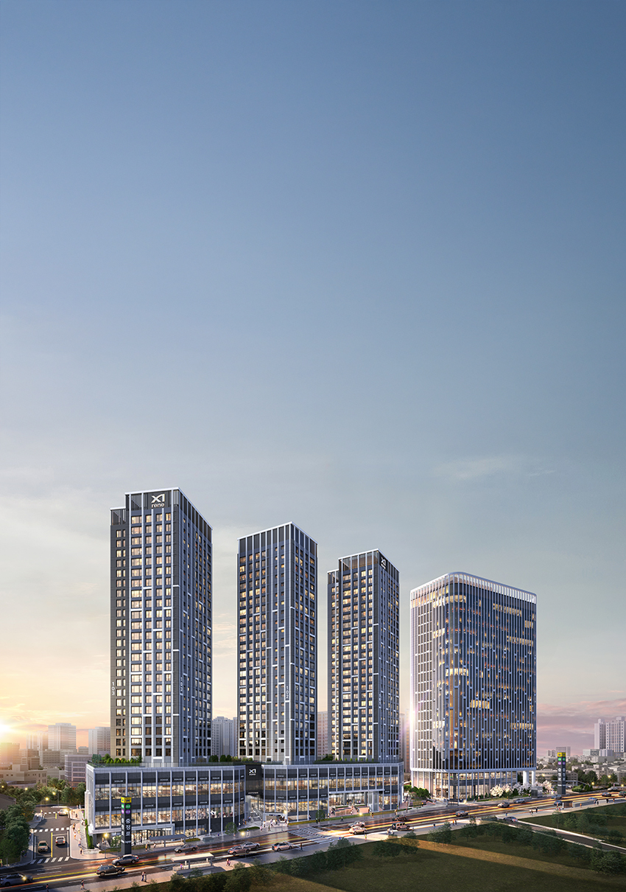

서울 중구 중림동 157-2번지 일원, GS건설(자이S&D)이 공급하는 충정로역자이르네는 지하 7층~지상 25층, 3개 동, 전용 39~84㎡, 총 299세대 규모의 아파트다. 2·5호선 충정로역과 직통 연결되며, 광화문·여의도·공덕이 모두 가까운 도심권 입지가 강점이다. 브동산은 전용 84㎡(84A·84B 가중평균) 타입을 기준으로 경희궁자이2단지·서대문푸르지오센트럴파크 두 단지와 비교해 적정가를 산출했다.
| 평가 항목 | SITE · 충정로역자이르네 (자이S&D·299세대·준공예정 확인 안 됨, 2029년경 추정) | 경희궁자이2단지 (GS건설·1,148세대·2017년 입주) | 서대문푸르지오센트럴파크 (대우건설·832세대·2022년 10월 입주) |
|---|---|---|---|
| 입지(40) | 33 | 25 | 27 |
| 브랜드(20) | 20 | 20 | 20 |
| 상품성(40) | 28 | 34 | 33 |
| 종합평점 | 81 | 79 | 80 |
| 연식가산율 | 기준(추정) | 12년0개월차·×1.104(추정) | 6년8개월차·×1.053(추정) |
| 84㎡ 기준가 | - | 25.25억(범위 중간값, 최근 실거래) | 18.50억(실거래, 최근) |
| 보정가격 | - | 28.43억 | 19.68억 |
SITE의 공식 준공(입주) 예정 시점은 확인되지 않아, 통상적인 정비사업 공정(분양 후 약 3년)을 근거로 2029년경을 추정치로 사용했습니다. SITE 분양가는 84A(최고 24억5,500만원, 33세대)·84B(최고 22억9,500만원, 68세대)를 세대수로 가중평균한 값입니다. 84㎡ 기준가는 언론·부동산 포털에 게재된 최근 시세(2026.09.28 확인)입니다.
종합하면 브동산 모형상 완만한 저평가 신호와 실제 44.5대 1의 청약 흥행이 대체로 같은 방향을 가리킵니다. 다만 SITE는 아직 착공 전 선분양 단지라 이미 준공된 비교단지보다 신규 수요가 더 붙는 경향이 있어, 기축 시세를 그대로 준용하는 것보다는 이 점을 감안해 볼 필요가 있습니다. 마피 폭 자체가 크지 않은 만큼 단기 차익 기대는 어렵지만, 충정로역 직통연결이라는 도심 접근성을 보면 실거주로는 무리가 없는 선택으로 판단됩니다.
서울특별시 중구 중림동 157-2번지 일원, 서소문 지역에 위치한다. 지하철 2·5호선 충정로역과 직통 연결되며, 시청역 한 정거장, 광화문역·공덕역 두 정거장, 여의나루역 네 정거장 등 서울 주요 업무지구를 10분 내로 이동할 수 있다.
서울은 수도권 그룹으로 분류돼 지하철 중심 배점을 적용했습니다. 충정로역과 직통 연결이라는 점에서 세 단지 중 가장 높은 지하철 접근성 점수를 부여했고, 2·5호선 환승역이라는 점도 추가로 반영했습니다. 배정초등학교는 서울봉래초등학교로, 단지에서 약 500m 거리의 도보 통학권입니다. 명문 사립 경기초등학교, 환일중·고교가 인근에 있으며 연세대·이화여대·서강대·홍익대 등 주요 대학도 가깝습니다. 서울로7017·서소문역사공원·손기정체육공원·덕수궁·정동길이 인접하고, 단지 전면에도 약 2,830㎡ 규모의 공원이 조성될 예정입니다.
자이S&D가 시공하는 지하 7층~지상 25층, 3개 동 규모의 아파트로, 전용 39~84㎡ 사이 다양한 타입, 총 299세대로 구성된다.
| 타입 | 일반공급 모집 | 분양가(최고가)·경쟁률 |
|---|---|---|
| 39㎡B | 3가구 | 608명 신청, 202.7대 1 |
| 39㎡A | 2가구 | 292명 신청, 146대 1 |
| 59㎡ | 35가구 | 2,266명 신청, 64.74대 1 |
| 84㎡A | 33세대 | 최고 24억 5,500만원 |
| 84㎡B | 68세대 | 최고 22억 9,500만원 |
분양가·경쟁률은 언론 보도(2026.08) 기준입니다. 일반공급 전체는 84가구 모집에 3,740명이 신청해 평균 44.5대 1을 기록했습니다. 이번 조사에서는 공식 티저 홈페이지에서 조감 이미지 1점을 확보했고, 세부 평면도는 접근이 제한돼 게재하지 못했습니다.
중구는 업무지구 밀집으로 신규 주택 공급이 드문 지역으로, 299세대 규모의 SITE는 사대문 안 희소성을 지닌 소규모 도심 공급이다.
중구·서대문구 도심권은 이미 개발이 완료된 성숙 지역이라 대규모 신규 공급 여력이 크지 않습니다. 앞서 인근에서 분양한 '더플레이스충정로' 등 소규모 단지 외에는 이렇다 할 경쟁 물량이 없어, SITE의 희소성이 부각됐습니다.
실제로 일반공급 1순위 평균 44.5대 1, 39㎡B 최고 202.7대 1을 기록하며 흥행했습니다. 브동산 모형상 완만한 저평가 신호(약 2%)와 대체로 같은 방향이지만, 격차 자체가 크지 않은 만큼 이 흥행은 저평가보다는 사대문 안 희소성과 직통역세권 프리미엄이 더 크게 작용한 결과로 보입니다.
종합하면 이 단지는 충정로역 직통 연결이라는 희소한 도심 입지와 준수한 교육환경을 갖췄고, 브동산 모형과 실제 청약 흥행 모두 완만하게 긍정적인 신호를 가리켰습니다. 다만 SITE는 아직 선분양 단계라 준공된 비교단지보다 신규 수요가 더 붙는 경향이 있다는 점을 감안하면, 단기 차익보다는 도심 접근성을 보고 실거주 목적으로 접근하는 편이 합리적입니다.
seodangdog81@gmail.com